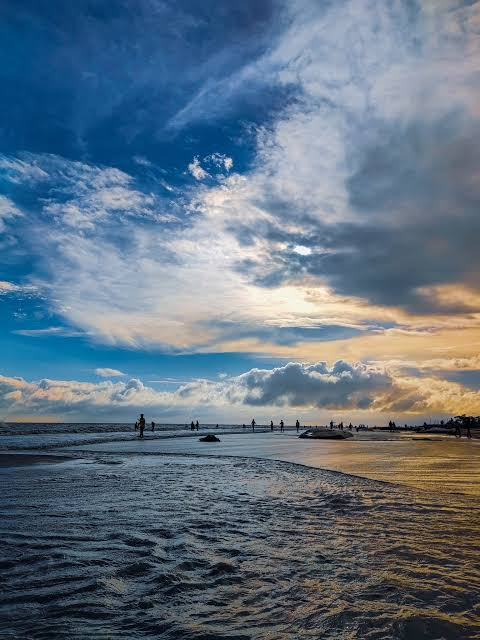
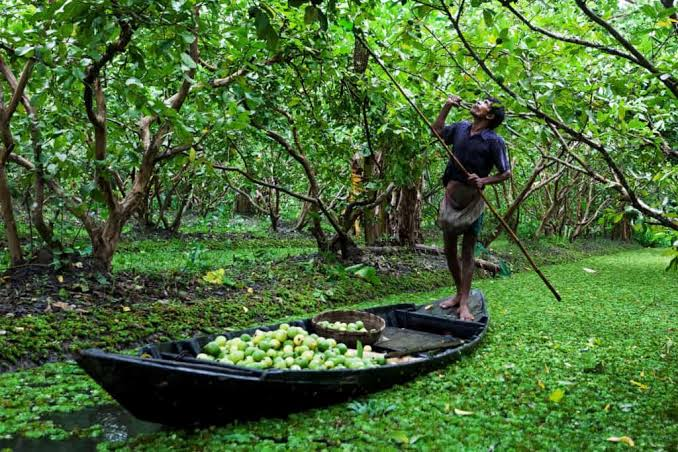

Historical importance
Barishal’s river routes helped connect inland Bengal with the coast and supported trade, travel, and cultural exchange. The waterways continue to shape settlement patterns and regional identity.
The riverine south
Known as the country of rivers, Barishal is a landscape of waterways, orchards, markets, and life shaped by the tide.
Introduction & location
Barishal Division lies in the south-central delta, where the Ganges–Brahmaputra river system fans into countless channels on its way to the Bay of Bengal. Boats remain an essential link between towns, villages, farms, and markets.
Its low-lying landscape is fertile and intensely connected to water, with a strong tradition of fishing, rice cultivation, and fruit growing.
Discover the region

The coastal town in Patuakhali is known for its open Bay of Bengal views and long sandy beach.

In the monsoon season, boats gather at canal-side markets in the Barishal region to trade fresh guavas and produce.

River islands and estuary scenery reveal the shifting, fertile landscape where Bangladesh’s rivers meet the sea.
Heritage & everyday life
Barishal’s river routes helped connect inland Bengal with the coast and supported trade, travel, and cultural exchange. The waterways continue to shape settlement patterns and regional identity.
Boat journeys, seasonal fairs, folk songs, and river-based work are woven into local life. Communities celebrate Bengali festivals while preserving customs connected to fishing, farming, and the monsoon.
Barishal is associated with hilsa, freshwater fish, rice, and seasonal pitha. Guavas, coconuts, and other fruits from the region’s orchards are enjoyed fresh and in local preparations.
Rice cultivation, fisheries, fruit orchards, river transport, and small-scale trade are important sources of work. Fertile delta soils and abundant water are major assets, though livelihoods are vulnerable to flooding and storms.
The Meghna, Arial Khan, Bishkhali, and many smaller channels shape the division. Coastal mangrove patches, estuaries, wetlands, and chars provide habitat for fish, waterbirds, and other wildlife.
Barishal contributes to national food and fish supplies and embodies the country’s close relationship with its rivers. Its people and ecosystems are also on the front line of climate adaptation and coastal resilience.